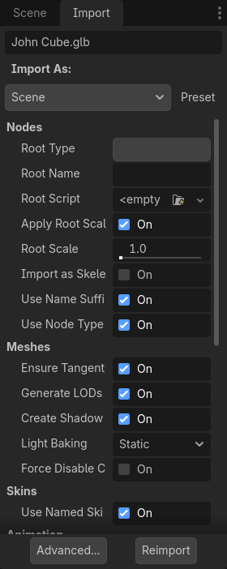
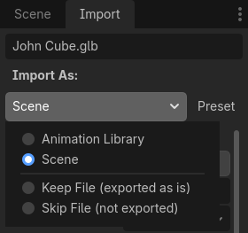
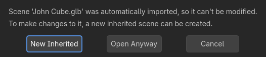

Cấu hình import
Godot cung cấp nhiều cách để tùy chỉnh dữ liệu được import, như Import dock, hộp thoại cài đặt import nâng cao và scene kế thừa. Bạn có thể dùng chúng để thực hiện thêm các thay đổi cho scene đã import, như điều chỉnh mesh, thêm thông tin vật lý và thêm node mới. Bạn cũng có thể viết một script chạy mã ở cuối quá trình import để tùy chỉnh tùy ý.
Lưu ý rằng, khi có thể, nên ưu tiên chỉnh sửa dữ liệu gốc thay vì cấu hình scene sau khi import. Điều này giúp giảm thiểu khác biệt giữa ứng dụng dựng hình 3D và scene đã import. Xem các bài Lưu ý khi xuất model và Tùy chỉnh kiểu node bằng hậu tố tên để biết thêm thông tin.
Quy trình import
Vì Godot chỉ có thể lưu định dạng scene riêng của nó (.tscn/.scn), Godot không thể lưu đè lên tệp scene 3D gốc (vốn dùng định dạng khác). Đây cũng là cách tiếp cận an toàn hơn vì nó tránh vô tình thay đổi tệp nguồn.
Để cho phép tùy chỉnh scene và material của nó, trình import scene của Godot hỗ trợ các quy trình khác nhau về cách dữ liệu được import.

Import dock sau khi chọn một scene 3D trong FileSystem dock
Quá trình import này có thể được tùy chỉnh qua 3 giao diện riêng biệt, tùy theo nhu cầu của bạn:
Dock Import, sau khi chọn scene 3D bằng cách nhấp một lần vào nó trong FileSystem dock.
Hộp thoại Advanced Import Settings, có thể mở bằng cách nhấp đúp vào scene 3D trong FileSystem dock hoặc nhấp nút Advanced… trong Import dock. Hộp thoại này cho phép bạn tùy chỉnh tùy chọn cho từng đối tượng trong Godot, và xem trước mô hình cũng như hoạt ảnh. Vui lòng xem trang Cài đặt import nâng cao để biết thêm thông tin.
Gợi ý import, là các hậu tố đặc biệt được thêm vào tên đối tượng trong phần mềm dựng hình 3D. Cách này cho phép bạn tùy chỉnh tùy chọn cho từng đối tượng ngay trong phần mềm dựng hình 3D.
Với tùy chỉnh cơ bản, dùng Import dock là đủ. Tuy nhiên, với các thao tác phức tạp hơn như định nghĩa ghi đè material cho từng material, bạn sẽ cần dùng hộp thoại Advanced Import Settings, gợi ý import, hoặc có thể cả hai.
Sử dụng Import dock
Có thể điều chỉnh các tùy chọn sau trong Import dock sau khi chọn một scene 3D trong FileSystem dock:
Root Type: Loại node dùng làm node gốc. Bạn nên dùng các loại node kế thừa từ Node3D. Nếu không, bạn sẽ mất khả năng định vị node trực tiếp trong trình chỉnh sửa 3D.
Root Name: Tên của node gốc trong scene đã import. Điều này thường không dễ nhận thấy khi tạo instance scene trong trình chỉnh sửa (hoặc kéo thả từ FileSystem dock), vì trong trường hợp đó node gốc sẽ được đổi tên cho khớp với tên tệp.
Apply Root Scale: Nếu bật, Root Scale sẽ được áp dụng trực tiếp lên các mesh và hoạt ảnh, trong khi tỷ lệ của node gốc vẫn giữ mặc định (1, 1, 1). Điều này có nghĩa là nếu sau này bạn thêm một node con vào scene đã import, node đó sẽ không bị thay đổi tỷ lệ. Nếu tắt, Root Scale sẽ nhân vào tỷ lệ của node gốc.
Meshes
Ensure Tangents: Nếu được đánh dấu, tạo tangent cho đỉnh bằng Mikktspace nếu các mesh đầu vào không có dữ liệu tangent. Khi có thể, bạn nên để phần mềm dựng hình 3D tạo tangent khi xuất thay vì dựa vào tùy chọn này. Tangent cần thiết để hiển thị đúng normal map và height map, cùng mọi tính năng material/shader cần tangent. Nếu bạn không cần các tính năng material đòi hỏi tangent, tắt tùy chọn này có thể giảm kích thước tệp đầu ra và tăng tốc import nếu tệp 3D nguồn không chứa tangent.
Generate LODs: Nếu được đánh dấu, tạo các biến thể chi tiết thấp hơn của mesh để hiển thị ở khoảng cách xa nhằm cải thiện hiệu năng kết xuất. Không phải mesh nào cũng hưởng lợi từ LOD, đặc biệt nếu chúng không bao giờ được kết xuất từ xa. Tắt tùy chọn này có thể giảm kích thước tệp đầu ra và tăng tốc import. Xem Mức độ chi tiết của mesh (LOD) để biết thêm thông tin.
Create Shadow Meshes: Nếu được đánh dấu, bật việc tạo shadow mesh khi import. Tùy chọn này tối ưu hóa việc kết xuất bóng mà không giảm chất lượng bằng cách hàn các đỉnh lại với nhau khi có thể. Điều này giúp giảm băng thông bộ nhớ cần để kết xuất bóng. Việc tạo shadow mesh hiện chưa hỗ trợ dùng mức chi tiết thấp hơn mesh nguồn (nhưng việc kết xuất bóng sẽ tận dụng LOD khi phù hợp).
Light Baking: Cấu hình chế độ chiếu sáng toàn cục của các mesh trong scene 3D. Nếu đặt thành Static Lightmaps, chế độ GI của các mesh sẽ được đặt thành Static và UV2 sẽ được tạo khi import để phục vụ bake lightmap.
Lightmap Texel Size: Chỉ hiển thị nếu Light Baking được đặt thành Static Lightmaps. Điều khiển kích thước của mỗi texel trên lightmap đã bake. Giá trị nhỏ hơn cho lightmap chính xác hơn, đổi lại kích thước lightmap lớn hơn và thời gian bake lâu hơn.
Skins
Use Named Skins: Nếu được đánh dấu, dùng các Skin có tên cho hoạt ảnh. Node class_MeshInstance3D chứa 3 thuộc tính liên quan ở đây: một NodePath skeleton trỏ tới node Skeleton3D (thường là
..), một mesh và một skin:Node class_Skeleton3D chứa danh sách các xương với tên, tư thế (pose) và tư thế nghỉ (rest), một tên và một xương cha.
Mesh là toàn bộ dữ liệu đỉnh thô cần thiết để hiển thị một mesh. Về phía mesh, nó biết các đỉnh được vẽ trọng số (weight-paint) như thế nào và dùng một cách đánh số nội bộ thường được import từ phần mềm dựng hình 3D.
Skin chứa thông tin cần thiết để gắn mesh này vào Skeleton3D này. Với mỗi ID xương nội bộ do phần mềm dựng hình 3D chọn, nó chứa hai thứ. Thứ nhất, một ma trận được gọi là Bind Pose Matrix, Inverse Bind Matrix, hay viết tắt là IBM. Thứ hai, Skin chứa tên của từng xương (nếu Use Named Skins được bật), hoặc chỉ số của xương trong danh sách Skeleton3D (nếu Use Named Skins bị tắt).
Kết hợp lại, các thông tin này đủ để cho Godot biết cách dùng tư thế xương trong node Skeleton3D để kết xuất mesh từ mỗi MeshInstance3D. Lưu ý rằng các MeshInstance3D có thể dùng chung bind, như thường thấy ở các mô hình xuất từ Blender, hoặc mỗi MeshInstance3D có thể dùng một đối tượng Skin riêng, như thường thấy ở các mô hình xuất từ các công cụ khác như Maya.
Hoạt ảnh
Import: Nếu được đánh dấu, import hoạt ảnh từ scene 3D.
FPS: Số khung hình mỗi giây dùng để bake các đường cong hoạt ảnh thành một chuỗi điểm với nội suy tuyến tính. Bạn nên cấu hình giá trị này khớp với giá trị bạn dùng làm chuẩn trong phần mềm dựng hình 3D. Giá trị cao hơn cho hoạt ảnh chính xác hơn với các chuyển động thay đổi nhanh, đổi lại kích thước tệp và mức sử dụng bộ nhớ cao hơn. Nhờ nội suy, thường không có nhiều lợi ích khi vượt quá 30 FPS (vì hoạt ảnh vẫn trông mượt ở tốc độ khung hình kết xuất cao hơn).
Trimming: Cắt bỏ phần đầu và cuối của hoạt ảnh nếu không có thay đổi keyframe. Điều này có thể giảm kích thước tệp đầu ra và mức sử dụng bộ nhớ với một số scene 3D, tùy vào nội dung các track hoạt ảnh của chúng.
Remove Immutable Tracks: Xóa các track hoạt ảnh chỉ chứa giá trị mặc định. Điều này có thể giảm kích thước tệp đầu ra và mức sử dụng bộ nhớ với một số scene 3D, tùy vào nội dung các track hoạt ảnh của chúng.
Import Script
Path: Đường dẫn tới một script import, có thể chạy mã sau khi quá trình import hoàn tất để xử lý tùy chỉnh. Xem Dùng script import để tự động hóa để biết thêm thông tin.
glTF
Embedded Texture Handling: Điều khiển cách xử lý các texture được nhúng trong scene glTF. Discard All Textures sẽ không import texture nào, hữu ích nếu bạn muốn tự thiết lập material trong Godot. Extract Textures trích xuất texture thành các ảnh bên ngoài, giúp kích thước tệp nhỏ hơn và kiểm soát tùy chọn import tốt hơn. Embed as Basis Universal và Embed as Uncompressed giữ texture được nhúng trong scene đã import, lần lượt có và không có nén VRAM.
FBX
Importer Phương thức import được sử dụng. ubfx xử lý tệp fbx như tệp fbx. FBX2glTF chuyển đổi tệp FBX sang glTF khi import và cần thiết lập thêm. Không khuyến nghị dùng FBX2glTF trừ khi bạn có lý do cụ thể để dùng nó thay cho ufbx hoặc làm việc với một định dạng tệp khác.
Allow Geometry Helper Nodes bật hoặc tắt các node trợ giúp hình học
Embedded Texture Handling: Điều khiển cách xử lý các texture được nhúng trong scene fbx. Discard All Textures sẽ không import texture nào, hữu ích nếu bạn muốn tự thiết lập material trong Godot. Extract Textures trích xuất texture thành các ảnh bên ngoài, giúp kích thước tệp nhỏ hơn và kiểm soát tùy chọn import tốt hơn. Embed as Basis Universal và Embed as Uncompressed giữ texture được nhúng trong scene đã import, lần lượt có và không có nén VRAM.
Tùy chọn dành riêng cho Blender
Chỉ hiển thị với tệp .blend.
Nodes
Visible: All import mọi thứ, kể cả các đối tượng ẩn. Visible Only chỉ import các đối tượng hiển thị. Renderable chỉ import các đối tượng được đánh dấu là có thể render trong Blender, bất kể chúng có thực sự hiển thị hay không. Trong Blender, khả năng render được bật/tắt bằng cách nhấp vào biểu tượng camera bên cạnh mỗi đối tượng trong Outliner, còn khả năng hiển thị được bật/tắt bằng biểu tượng con mắt.
Active Collection Only: Nếu được chọn, chỉ import các node nằm trong collection đang hoạt động trong Blender.
Punctual Lights: Nếu được chọn, import các nguồn sáng (directional, omni và spot) từ Blender. Không nên nhầm "punctual" với "positional", đó là lý do vì sao nguồn sáng directional cũng được bao gồm.
Cameras: Nếu được chọn, import các camera từ Blender.
Custom Properties: Nếu được chọn, import các thuộc tính tùy chỉnh từ Blender dưới dạng glTF extras. Dữ liệu này sau đó có thể được dùng từ một plugin trình chỉnh sửa sử dụng GLTFDocument.register_gltf_document_extension(), plugin này có thể đặt metadata cho node khi import (cùng nhiều trường hợp sử dụng khác).
Modifiers: Nếu đặt thành No Modifiers, các modifier của đối tượng sẽ bị bỏ qua khi import. Nếu đặt thành All Modifiers, các modifier sẽ được áp dụng lên đối tượng khi import.
Meshes
Colors: Nếu được chọn, import màu đỉnh (vertex color) từ Blender.
UVs: Nếu được chọn, import UV1 và UV2 của đỉnh từ Blender.
Normals: Nếu được chọn, import pháp tuyến đỉnh (vertex normal) từ Blender.
Export Geometry Nodes Instances: Nếu được chọn, import các instance geometry node từ Blender.
GPU Instances Nếu được chọn, import các instance và hệ thống hạt dưới dạng dữ liệu buffer/accessor của GLTF thay vì vô số đối tượng Mesh3D riêng lẻ. Tùy chọn này không bao gồm instancing của Geometry Nodes.
Tangents: Nếu được chọn, import tiếp tuyến đỉnh (vertex tangent) từ Blender.
Skins: None bỏ qua việc import dữ liệu skin của skeleton từ Blender. 4 Influences (Compatible) import dữ liệu skin sao cho tương thích với mọi renderer, đổi lại độ chính xác thấp hơn với một số rig. All Influences import dữ liệu skin với tất cả influence (tối đa 8 trong Godot), chính xác hơn nhưng có thể không tương thích với mọi renderer.
Export Bones Deforming Mesh Only: Nếu được chọn, chỉ import từ Blender các xương có làm biến dạng mesh.
Material
Unpack Enabled: Nếu được chọn, giải nén các ảnh gốc vào hệ thống tệp của Godot và sử dụng chúng. Điều này cho phép thay đổi cài đặt import ảnh như nén VRAM. Nếu bỏ chọn, Blender sẽ được phép chuyển đổi các ảnh gốc, chẳng hạn đóng gói lại roughness và metallic thành một texture roughness + metallic duy nhất. Trong hầu hết trường hợp, bạn nên giữ tùy chọn này được chọn, nhưng nếu ảnh trong tệp
.blendkhông ở đúng định dạng thì phải tắt nó để có hành vi chính xác.Export Materials: Nếu đặt thành Placeholder, material sẽ không được import nhưng các surface slot vẫn được giữ lại để bạn có thể gán material riêng cho từng surface. Nếu đặt thành Export, material được import nguyên trạng (lưu ý rằng material procedural của Blender có thể không hoạt động đúng). Nếu đặt thành Named Placeholder, material được import nhưng các ảnh được đóng gói trong tệp
.blendthì không. Bạn sẽ phải gán lại texture thủ công trong các material đã import.
Hoạt ảnh
Limit Playback: Nếu được chọn, giới hạn việc import hoạt ảnh trong phạm vi phát được định nghĩa trong Blender (các tùy chọn Start và End ở bên phải timeline hoạt ảnh trong Blender). Điều này giúp tránh đưa vào dữ liệu hoạt ảnh không dùng đến, làm scene đã import nhỏ hơn và tải nhanh hơn. Tuy nhiên, nó cũng có thể khiến bị thiếu dữ liệu hoạt ảnh nếu phạm vi phát không được đặt đúng trong Blender.
Always Sample: Nếu được chọn, buộc lấy mẫu hoạt ảnh khi import để đảm bảo nhất quán giữa cách Blender và glTF nội suy hoạt ảnh, đổi lại kích thước tệp lớn hơn. Nếu bỏ chọn, có thể có khác biệt trong cách nội suy hoạt ảnh giữa những gì bạn thấy trong Blender và scene đã import trong Godot, do ngữ nghĩa nội suy giữa hai bên khác nhau.
Group Tracks: Nếu được chọn, import các hoạt ảnh (action đang hoạt động và trên các track NLA) thành các track riêng biệt. Nếu bỏ chọn, tất cả action đang được gán sẽ trở thành một hoạt ảnh glTF duy nhất.
Dùng script import để tự động hóa
Bạn có thể cung cấp một script đặc biệt để xử lý toàn bộ scene sau khi import. Điều này rất hữu ích cho việc hậu xử lý, thay đổi material, làm những điều thú vị với hình học, và nhiều hơn nữa.
Tạo một script không gắn vào node nào bằng cách nhấp chuột phải trong FileSystem dock và chọn New > Script…. Trong trình chỉnh sửa script, hãy viết như sau:
@tool # Needed so it runs in editor.
extends EditorScenePostImport
# This sample changes all node names.
# Called right after the scene is imported and gets the root node.
func _post_import(scene):
# Change all node names to "modified_[oldnodename]"
iterate(scene)
return scene # Remember to return the imported scene
# Recursive function that is called on every node
# (for demonstration purposes; EditorScenePostImport only requires a `_post_import(scene)` function).
func iterate(node):
if node != null:
print_rich("Post-import: [b]%s[/b] -> [b]%s[/b]" % [node.name, "modified_" + node.name])
node.name = "modified_" + node.name
for child in node.get_children():
iterate(child)
Hàm _post_import(scene: Node) nhận scene đã import làm đối số (tham số này thực chất là node gốc của scene). Scene sẽ được dùng cuối cùng phải được trả về (kể cả khi đó là một scene hoàn toàn khác).
Để dùng script của bạn, hãy chỉ định script trong tùy chọn "Path" thuộc nhóm "Import Script" của tab import.
Sử dụng thư viện hoạt ảnh
Bạn cũng có thể chọn chỉ import hoạt ảnh từ một tệp glTF mà không import gì khác. Cách này được dùng trong một số asset pipeline để phân phối hoạt ảnh tách biệt với model. Ví dụ, nó cho phép bạn dùng một bộ hoạt ảnh cho nhiều nhân vật mà không phải sao chép dữ liệu hoạt ảnh vào từng nhân vật.
Để làm vậy, hãy chọn tệp glTF trong FileSystem dock, sau đó đổi chế độ import thành Animation Library trong Import dock:

Đổi kiểu import thành Animation Library trong Import dock
Nhấp Reimport và khởi động lại trình chỉnh sửa khi được nhắc. Sau khi khởi động lại, tệp glTF sẽ được import thành một class_AnimationLibrary thay vì một class_PackedScene. Animation library này sau đó có thể được tham chiếu trong một node class_AnimationPlayer.
Các tùy chọn import hiển thị sau khi đổi chế độ import thành Animation Library hoạt động giống như khi dùng chế độ import Scene. Xem Sử dụng Import dock để biết thêm thông tin.
Script lọc
Bạn có thể chỉ định một script lọc bằng cú pháp đặc biệt để quyết định giữ lại những track nào từ những hoạt ảnh nào.
Script lọc được thực thi trên từng hoạt ảnh được import. Cú pháp gồm hai loại câu lệnh: loại thứ nhất để chọn hoạt ảnh cần lọc, loại thứ hai để lọc từng track trong hoạt ảnh khớp. Mọi mẫu tên đều được so khớp không phân biệt chữ hoa chữ thường, hỗ trợ ký tự đại diện ? và * (bên dưới sử dụng String.matchn()).
Script phải bắt đầu bằng một câu lệnh lọc hoạt ảnh (được đánh dấu bằng dòng bắt đầu với @). Ví dụ, nếu muốn áp dụng bộ lọc cho tất cả hoạt ảnh được import có tên kết thúc bằng "_Loop":
@+*_Loop
Tương tự, có thể thêm các mẫu khác vào cùng dòng, phân cách bằng dấu phẩy. Dưới đây là ví dụ đã chỉnh sửa để bao gồm thêm tất cả hoạt ảnh có tên bắt đầu bằng "Arm_Left", đồng thời loại trừ tất cả hoạt ảnh có tên kết thúc bằng "Attack":
@+*_Loop, +Arm_Left*, -*Attack
Sau câu lệnh lọc chọn hoạt ảnh, chúng ta thêm các mẫu lọc track để chỉ ra track hoạt ảnh nào cần giữ lại hay loại bỏ. Nếu không chỉ định mẫu lọc track nào, tất cả track trong các hoạt ảnh khớp sẽ bị loại bỏ!
Cần lưu ý rằng các câu lệnh lọc track được áp dụng theo thứ tự cho từng track trong hoạt ảnh, nghĩa là một dòng có thể bao gồm một track nhưng một quy tắc phía sau vẫn có thể loại bỏ nó. Tương tự, một track bị loại trừ bởi quy tắc phía trước có thể lại được bao gồm bởi một quy tắc lọc ở phía dưới trong script lọc.
Ví dụ: bao gồm tất cả track trong các hoạt ảnh có tên kết thúc bằng "_Loop", nhưng loại bỏ mọi track tác động lên một "Skeleton" có tên kết thúc bằng "Control", trừ khi tên của chúng có chứa "Arm":
@+*_Loop
+*
-Skeleton:*Control
+*Arm*
Trong ví dụ trên, các track như "Skeleton:Leg_Control" sẽ bị loại bỏ, còn các track như "Skeleton:Head" hay "Skeleton:Arm_Left_Control" sẽ được giữ lại.
Mọi dòng lọc track không bắt đầu bằng + hoặc - đều bị bỏ qua.
Kế thừa scene
Trong nhiều trường hợp, bạn có thể muốn chỉnh sửa thủ công scene đã import. Theo mặc định, điều này là không thể vì nếu asset 3D gốc thay đổi, Godot sẽ import lại toàn bộ scene.
Tuy nhiên, bạn có thể thực hiện các chỉnh sửa cục bộ bằng cách dùng kế thừa scene. Nếu bạn thử mở scene đã import bằng Scene > Open Scene… hoặc Scene > Quick Open Scene…, hộp thoại sau sẽ xuất hiện:

Hộp thoại khi mở một scene 3D đã import trong trình chỉnh sửa
Trong các scene kế thừa, giới hạn duy nhất khi chỉnh sửa là:
Không thể xóa các node từ scene gốc, nhưng có thể thêm node mới ở bất kỳ đâu.
Không thể chỉnh sửa subresource. Thay vào đó, bạn cần lưu chúng ra ngoài như đã mô tả ở trên.
Ngoài ra, mọi thứ khác đều được phép.